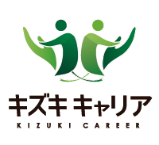

仕事を通じて、人生をより良くしたいと願うすべての人へ。
就労移⾏⽀援の確かなノウハウで、ミスマッチを防ぎ、定着と「活躍」を支援します。私たちは、障害者雇用を「福祉」ではなく、企業の「成長」と個人の「再出発」の架け橋にします。
お問い合わせ2024年4月から法定雇用率が2.5%へ引き上げられ、2026年には2.7%への引き上げが予定されています。
しかし、焦って採用し「定着しない」「現場が疲弊する」という悪循環に陥っていませんか？キズキキャリアは、単なる枠の充足ではなく、貴社の事業成長に貢献する「定着と活躍」を実現します。
「見えない障害」を可視化し、相互理解を深めるための独自のツールとメソッドを提供します。
障害特性に基づく配慮事項や強み・得意領域をレジュメ上で可視化。書類選考時から自社の業務内容・マネジメント環境との適合度を見極めやすくし、より納得感のある採用判断を可能にします。
フィジカル視点の体調・メンタル・睡眠状態を数値で表現し、個人の傾向値とあわせて当日の接し方をガイドします。本人も言語化しにくい現状に対し、適切なマネジメントが可能になります。
入社後も、本人の特性や接し方のポイントを踏まえて人事担当者と伴走。業務へのスムーズな適応と、長期的な成長・活躍につながる環境づくりをサポートします。
以前までは、自分の特性について言いづらく、苦手な仕事を避けようとしていましたが、今では障害特性を理解いただきながら、主体的に仕事ができるようになりました。適性がある業務で、働きやすい環境で働かせてもらっているので、2年以上気持ちよく働くことができています。
事前に、自身の強みと特性、会社の環境を認識し合えたため、現場にもスムーズに入ることができました。ハイブリッド勤務で体調も考慮しながら、より特性に合った異動もいただき、今後も長く続けたいと思っています。
キズキキャリアの就労定着サービスがこれまでに達成してきた実績をご紹介します。
定着率
就職後の長期的な活躍を支援し、高い定着率を実現しています。
当社の支援を受けた方の雇用形態の内訳です。
支援を通じて就職された企業の規模別割合です。
※本データの数値は、2020年〜2025年までの当社実績に基づきます（自社調べ）。
お問い合わせから採用、そして定着まで。一気通貫でサポートいたします。
貴社の業務内容や課題、現場の雰囲気を詳細にヒアリング。「どんな配慮が必要か」「どんな業務を任せられるか」をプロが言語化し、求人票作成をサポートします。
データベースから要件に合う人材を厳選してご紹介。面接だけでなく、必要に応じて「実習」の調整も行い、入社前のミスマッチを防ぎます。
入社当日の迎え入れ方や、現場社員への周知方法など、スムーズなスタートを切るためのアドバイスを行います。
入社後も定期的にご本人・企業様双方と面談を実施。小さな違和感の芽を摘み、長期的な定着とパフォーマンス発揮を伴走します。
採用が決定するまで費用は一切かかりません。
また、万が一早期に退職となってしまった場合の「返還金規定」も設けております。
※人材紹介料：理論年収の35%（下限65万円）
※返還金規定あり（入社後1ヶ月未満：80%返金、3ヶ月未満：50%返金、6ヶ月未満：5%返金）
人生には、立ち止まってしまう時があります。しかし、そこからどう歩み出すかが、その後の人生を決めます。
キズキキャリアは、単に「仕事を紹介する」だけのエージェントではありません。これまでの型にはまらず「やり直し」を肯定できるようなグループでありたいと考えます。本質的な個性の理解と、輝く場所の創造に。
仕事を通じて世界中の人々がより輝き、企業にとって欠かせない戦力となる未来を創り出します。
原則として利用料はかかりませんが、前年度の収入によっては自己負担が発生する場合があります。詳細はお問い合わせください。
はい、ご利用いただけます。転職に向けたサポートや、現在の職場での定着支援も行っています。
身体、知的、精神、発達障害など、障害者手帳をお持ちの方や医師の診断がある方が対象です。手帳をお持ちでない方もご相談ください。
はい、Zoom等を使用したオンライン相談も承っております。遠方の方や外出が難しい方もお気軽にご利用ください。
（株式会社キズキ 100%子会社）
私たちは、不登校・中退・ひきこもり・うつ病などの困難を経験した方々の支援を行うキズキグループの一員として、雇用領域における最高のソリューションを提供します。
「優しさ」だけでなく、プロフェッショナルとして人生を再構築する姿勢で、求職者と企業の双方に寄り添います。
お問い合わせあなたの「強み」を見つけ、長く安心して働ける職場へ。
キズキキャリアは、障害や特性のある方の就職・転職をサポートするエージェントです。
ただ仕事を紹介するだけでなく、あなたが自信を持って働けるよう、カウンセリングから定着まで伴走します。
多くの方が、自分に合った職場を見つけ、長く活躍されています。
定着率
入社後もしっかりサポートするため、早期離職が非常に少ないのが特徴です。
当社の支援を受けた方の雇用形態の内訳です。
支援を通じて就職された企業の規模別割合です。
これまでの経験や特性を丁寧にヒアリング。自分では気づかなかった「得意」を見つけ、自信につなげます。
「配慮」への理解があり、長く働きやすい環境が整っている企業を厳選してご紹介します。
就職はゴールではありません。働き始めてからの悩みも、専任のスタッフが継続的にサポートします。
以前までは、自分の特性について言いづらく、苦手な仕事を避けようとしていましたが、今では障害特性を理解いただきながら、主体的に仕事ができるようになりました。適性がある業務で、働きやすい環境で働かせてもらっているので、2年以上気持ちよく働くことができています。
事前に、自身の強みと特性、会社の環境を認識し合えたため、現場にもスムーズに入ることができました。ハイブリッド勤務で体調も考慮しながら、より特性に合った異動もいただき、今後も長く続けたいと思っています。
登録から就職、そして定着まで。専任アドバイザーがマンツーマンでサポートします。
まずはWebから簡単登録。オンラインまたは対面で、あなたの状況や希望、不安なことをじっくりお聞かせください。
「強み」や「特性」を整理し、あなたに合った求人をご提案します。一般公開されていない非公開求人も多数あります。
応募書類の添削や、模擬面接による練習を徹底的に行います。企業ごとに「何を見ているか」のアドバイスも可能です。
給与や入社日、必要な配慮事項などの条件交渉を代行します。納得して入社できるようサポートします。
入社後も定期的に面談を行い、新しい職場での悩み相談に乗ります。長く安心して働けるよう、私たちが伴走し続けます。
「一度つまづいたら、もう終わり」なんてことはありません。
私たちは、何度でもやり直せる社会をつくりたいと考えています。
あなたのペースで大丈夫です。私たちと一緒に、
自分らしく輝ける次のステージを探しに行きませんか？
いいえ、求職者の方は完全無料でご利用いただけます。費用は一切かかりませんのでご安心ください。
もちろん大丈夫です。「まずは話だけ聞いてみたい」「自分の市場価値を知りたい」という方も歓迎です。
はい、手帳をお持ちでない方や申請中の方、医師の診断がある方もご相談可能です。まずは一度お問い合わせください。
はい、オンライン（Zoom等）での面談を実施しておりますので、全国どこからでもサポート可能です。
「何度でもやり直せる社会をつくる」をミッションに掲げるキズキグループの一員です。
就労支援のほか、不登校支援の学習塾なども運営しており、困難を抱える方の「次の一歩」を応援し続けています。